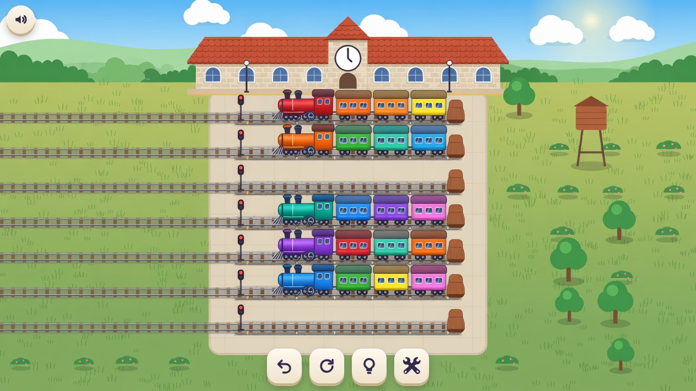
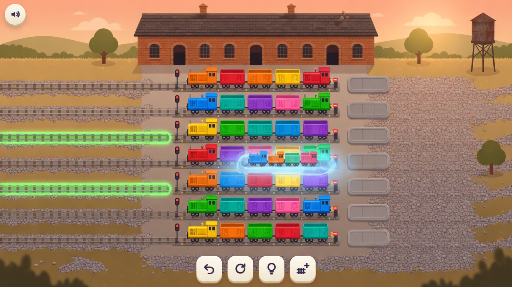
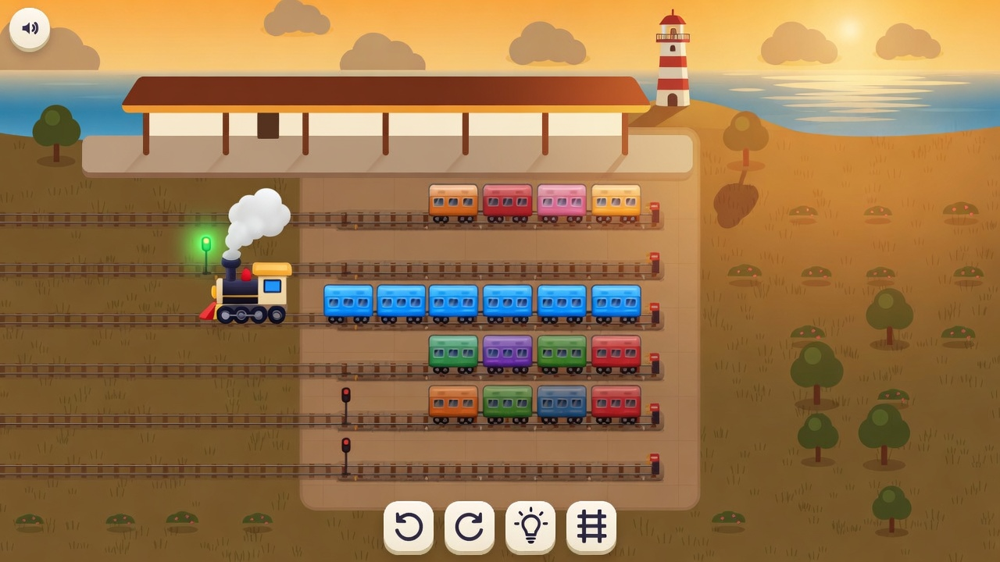
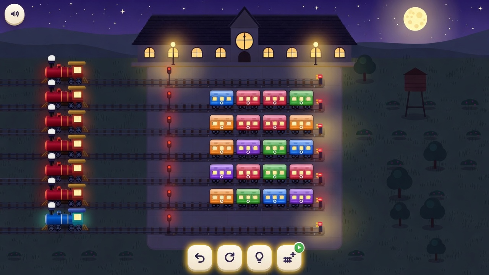
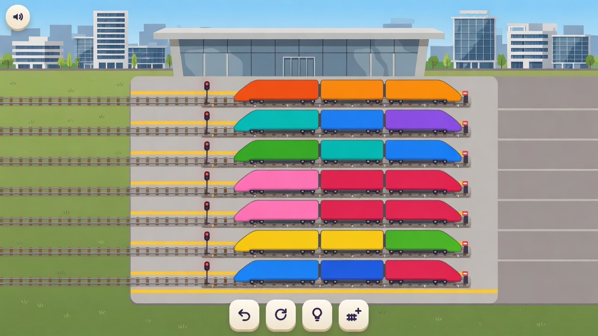
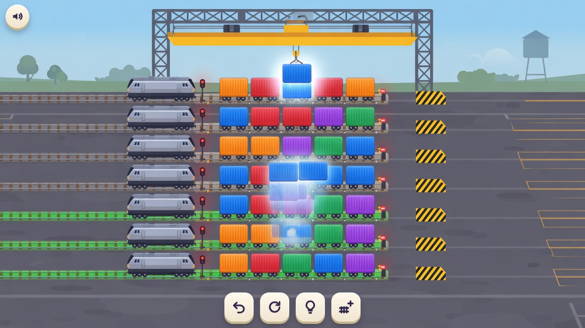
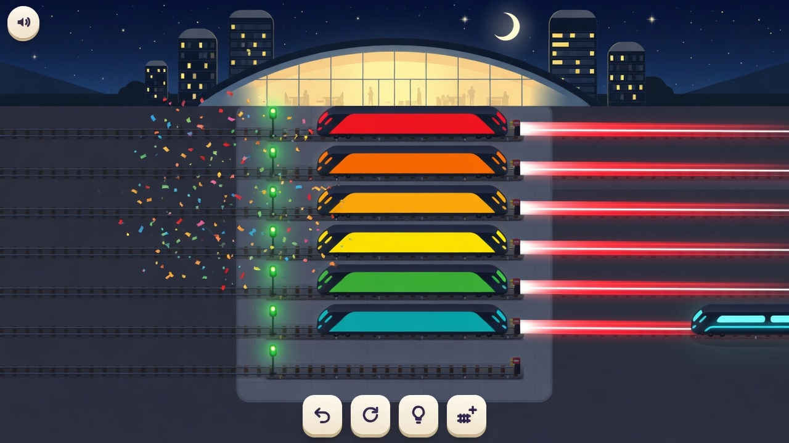
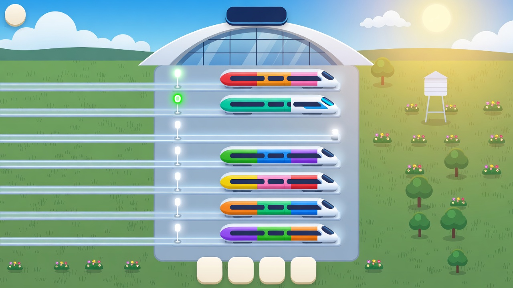
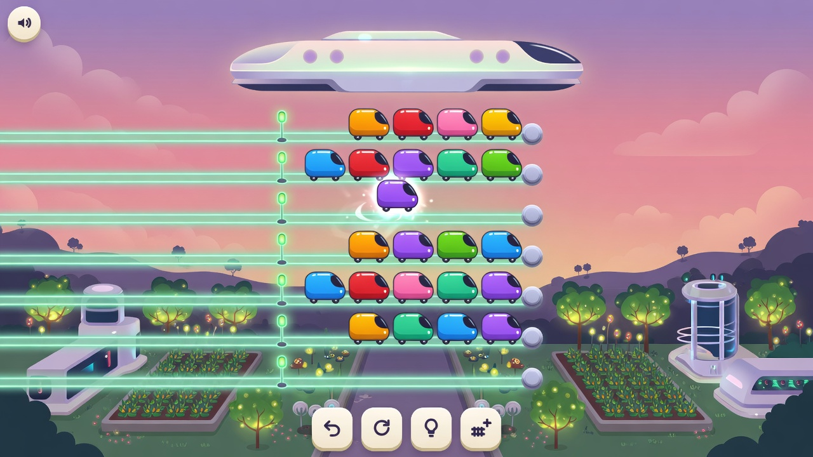
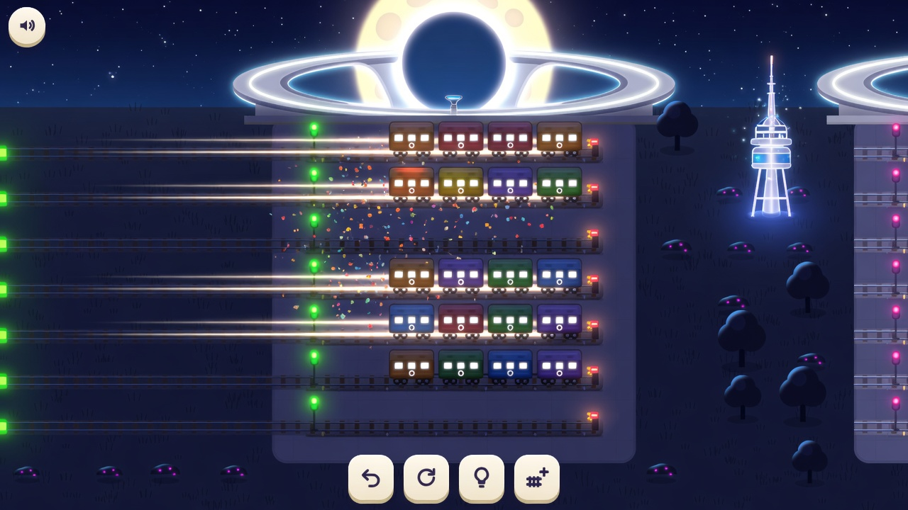

Época recente
Anos 30 a 60. Vapor curto e diesel de manobra, telha, tijolo e madeira. Longe do museu do século 19.

1. Vila, manhã
Ainda há uma locomotiva em filas de cores misturadas. No jogo ela só chega quando o trilho fecha numa cor só. O quarto botão saiu como uma chave, no lugar do trilho extra.

2. Pátio de tijolo, tarde
O fantasma ficou borrado, e locomotivas pequenas ocupam filas que ainda estão misturadas.

3. Beira-mar, fim de tarde
A locomotiva ficou no trilho de cima, ainda não engatada na fila azul.

4. Noite de globos
As locomotivas formam uma coluna à esquerda, separadas dos vagões, em vez de entrar na frente da fila.
Agora
Trem de passageiros de caixa reta, diesel de linha e estação de vidro. Sem chaminé.

5. Plataforma urbana, meio-dia

6. Terminal de carga
O fantasma se espalha em vários brilhos azuis, e há uma diesel em cada fila.

7. Cidade à noite
Cada trem saiu de uma cor só, em vez de uma fila de vagões, e o rastro aponta para a direita.
Futuro
Guia luminoso no lugar do lastro, cápsula no lugar da caldeira. Céu claro, não uma cidade escura de neon.

8. Maglev, manhã
Os botões de baixo saíram vazios, um sinal tem um zero, e as cores estão em faixas numa cápsula só. A caixa d'água da vila ainda aparece no campo.

9. Pátio suspenso, entardecer
O fantasma é um vagão só, sem a cópia do bloco no trilho de baixo. As guias todas acendem, não só as válidas.

10. Noite clara
Os vagões ainda se parecem com os de hoje. O que muda de fato é a luz, o anel e a lua.